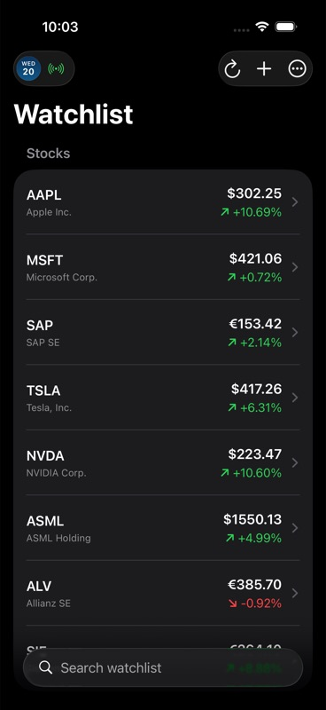
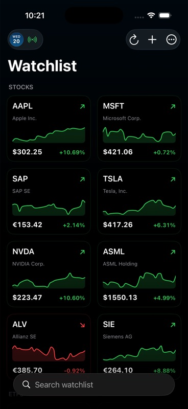
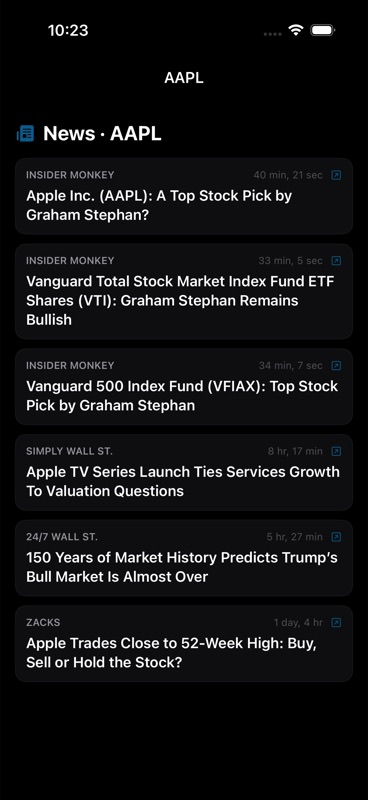
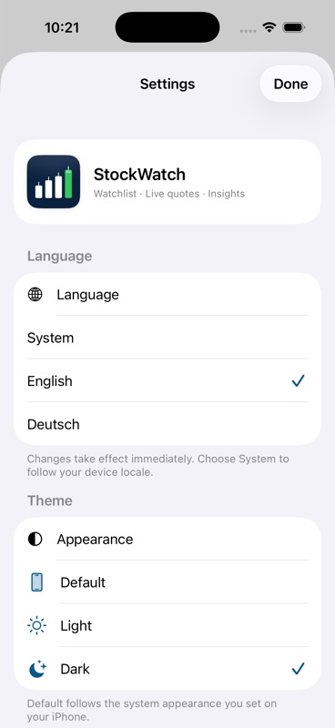
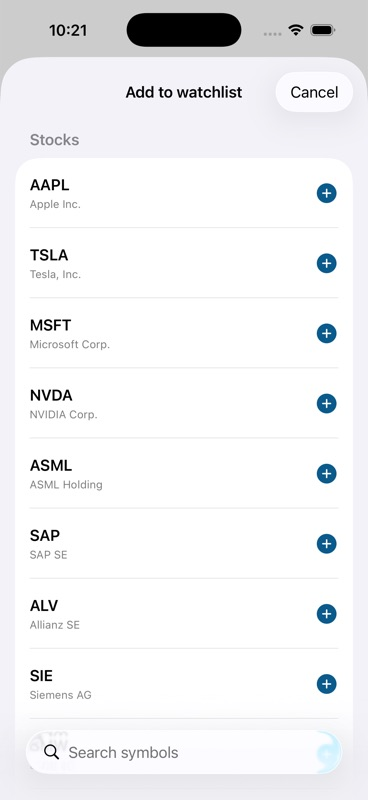

StockWatch — a SwiftUI Watchlist for iOS
A native iOS watchlist app inspired by Scalable Capital. Live Yahoo Finance quotes for 55+ tickers across six exchanges (US, German Xetra, UK, Swiss, Danish), interactive Swift Charts with seven time ranges, symbol-relevant news, EN/DE runtime language switch, and Dark/Light/System theming. Solo build.

The brief I gave myself
I open Scalable Capital ten times a day to glance at the same fifteen tickers. The app is great — except it limits me to one exchange, charges for the chart range I want, and shows news for the broker, not the symbol. I wanted my own thing.
The constraints I set: native iOS (no React Native, no hybrid), SwiftUI-first with no UIKit shims, real architecture (not a tutorial app), and shippable as a side-by-side EN/DE experience because a portfolio project for the German market that doesn't speak German is a missed signal.
What it does
| Coverage | 55+ tickers across NYSE, NASDAQ, Xetra, LSE, SIX, OMX Copenhagen |
|---|---|
| Live quotes | Yahoo Finance public endpoints via URLSession + async/await |
| Charts | Swift Charts — line view with scrubber, seven time ranges (1D / 5D / 1M / 3M / 6M / 1Y / 5Y) |
| News | Symbol-relevant headlines fetched on detail-screen open |
| Layouts | List view (default) + Grid view, both responsive |
| Themes | Dark / Light / System |
| Languages | English + German, switchable at runtime — not a relaunch |





Architecture
MVVM with one twist: every view-model is a Swift macro-generated @Observable class pinned to @MainActor. That eliminates the manual @Published wiring that older SwiftUI projects accumulate, and keeps every UI mutation on the main actor without sprinkling DispatchQueue.main.async across the codebase.
Dependency injection is protocol-based, not container-based. Every networking surface (Yahoo quote client, news client, persistence store) is an injectable protocol, so the XCTest suite swaps in fakes without touching production code paths.
// QuoteServicing.swift — the abstraction the ViewModel depends on.
protocol QuoteServicing {
func latest(for symbols: [String]) async throws -> [Quote]
}
// WatchlistViewModel.swift — main-actor pinned, observable, injected.
@MainActor @Observable
final class WatchlistViewModel {
private let quotes: QuoteServicing
var rows: [Quote] = []
var error: Error?
init(quotes: QuoteServicing) { self.quotes = quotes }
func refresh(_ symbols: [String]) async {
do { rows = try await quotes.latest(for: symbols) }
catch { error = error }
}
}// QuoteClientTests.swift — fake injected, no network in test.
final class WatchlistViewModelTests: XCTestCase {
@MainActor
func test_refresh_populatesRows() async {
let fake = FakeQuoteService(stub: [.fixture(symbol: "AAPL")])
let vm = WatchlistViewModel(quotes: fake)
await vm.refresh(["AAPL"])
XCTAssertEqual(vm.rows.first?.symbol, "AAPL")
}
}The runtime language switch
iOS apps usually require a relaunch to change language because Bundle.main resolves localised strings against the system locale at startup. StockWatch swaps localisation at runtime by swizzling Bundle.localizedString(forKey:value:table:) to read from a user-selected bundle (en.lproj or de.lproj), then posts a notification that views observe.
A personal-finance app needs to feel native in every market it ships in — number grouping, decimal separators, currency phrasing, and the labels above interest figures all matter. Designing for EN + DE from day one was cheaper than retrofitting later.
Decisions and tradeoffs
Yahoo Finance over a paid API
Considered IEX Cloud, Alpha Vantage, Polygon. Yahoo's public endpoints are unofficial but stable, free, and don't need an API key in a public repo. The tradeoff: rate limits are undocumented, so the app debounces refreshes and caches aggressively. For a side project this is a clean win; for production it'd need a contract feed.
Swift Charts, not SwiftUI Canvas
Swift Charts (iOS 16+) gives me the scrubbing gesture, axis ticks, and time-axis formatting for free. Hand-rolling with Canvas would have meant reimplementing each. The cost: I'm locked to iOS 16+ minimum, which I bumped to iOS 17 anyway to use @Observable.
Public repo from day one
No API keys, no proprietary data, no embarrassing TODOs left in for a year. Forced me to write the README, the licence, and the basic test suite before I forgot how anything worked.
What I'd do differently
- Background refresh. Today the app polls when foregrounded. A
BGAppRefreshTaskfor silent background updates would feel more native. - Currency normalisation. The app shows native currency per exchange. A user holding stocks across six markets needs one comparable number, not six.
- Apple Watch companion. The data layer is decoupled enough; the UI would be a weekend.
Outcomes
- Shipped a clean SwiftUI app from a blank Xcode project to a public GitHub repo in spare evenings across one semester.
- XCTest suite covers persistence round-trips, refresh transitions, and percent-change math — runs in under a second on the simulator.
- EN/DE runtime switch is the single most-asked-about detail in conversations about this project.
Want to talk about SwiftUI, Swift Charts, or shipping a side-project iOS app? hashwanthghanta@gmail.com · GitHub